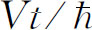

运动的粒子所求得的能量，而
是相应的粒子动量。
运动的粒子所求得的能量，而
是相应的粒子动量。我们现在要谈一些概率幅在时间中的行为。之所以只讲“一些”，是因为时间中的实际行为必然涉及到空间中的行为。因此，如果我们正确而详尽地处理这个问题，我们立刻就遇到最复杂的可能情况。我们总是处于这种困境，究竟是选用一种逻辑上严密然而颇为抽象的方式来处理问题，还是选用一种全然不严格、然而能使人对真实情况获得某种概念的方式来处理问题——将更仔细的讨论留到以后去。就能量相关性而言，我们将采用第二种做法。我们将作出一系列陈述。我们不要求严格，只是把业已发现的事实告诉你们，使你们对振幅作为时间的函数的特性得到一些感觉。当我们继续讲下去时，描述的精确性将逐渐增加，所以不要感到不安，似乎我们是在凭空捏造。当然，它确实是完全凭空的——凭借实验以及人类想象之空。但是重温历史的发展要花费太多时间，所以我们必须从其中某个阶段开始。我们可以埋头于抽象方式，并推导出一切——然而这么一来你们不易理解——或者，也可以诉诸于大量实验来证实每个论述。我们选取了介于上述两者之间的做法。
虚空空间中只有一个电子时，在一定条件下，它可以有确定的能量。例如，假使它静止着（就是它不作平动，也就没有动量或动能），它具有静止能量。像原子这样较复杂的粒子在静止时也可以有确定的能量，但它也可能由于内部激发而处在另一个能级上。（我们将在以后叙述其中机理。）我们常常可以把处在激发态的原子看作具有确定的能量，但这实际上只是近似正确而已。原子不会永远停留在激发态上，因为它会通过和电磁场相互作用而释放能量。所以，就有产生新状态的振幅——原子跃迁到较低的状态，而电磁场则变为较高的激发态。系统的总能量前后不变，但原子 的能量减少了。所以，一个受激原子具有确定 的能量这种说法是不精确的，不过这样说常常是方便的，而且并不十分错误。
［附带提一下，为什么原子这样变化而不那样变化？为什么原子辐射光？答案必定与熵有关。当能量处在电磁场中时，这些能量有如此多的存在方式——有如此多的地方供它徘徊——如果我们寻求平衡条件的话，我们发现最可能的情况是电磁场受到激发增加光子，原子退激发。要经过很长的时间后光子再返回来，并且发现它会将原子重新激发。这与以下这个经典问题非常类似：为什么加速运动的电荷会辐射？这并不意味着它“想要”丢掉能量，因为实际上当它辐射时，世界的总能量依然与辐射前一样。辐射或吸收沿着熵 增加的方向进行。］
原子核也可处于不同能级，在不计电磁效应的近似下，我们可以说有一个处于激发态的原子核。虽然我们知道它不会永远停留在该状态，但是，从一种多少理想化了的而又易于思考的近似情况着手往往是有用的。在一定的情况下这种近似常常也是合理的。（当我们最初介绍自由落体的经典定律时，并没有把摩擦考虑进去，但几乎从未有过一点 摩擦也没有 的情况。）
还存在着一些亚核“奇异粒子”，它们具有不同的质量。但较重的粒子会衰变为其他的轻粒子，因此说它们具有精确确定的能量也不正确。只当它们永远不发生变化这样说才是正确的。所以，在我们当作它们具有确定能量这一近似时，忽略了这些粒子必定分裂这一事实。目前，我们有意忘掉这种过程，以后再来学习怎样将它们考虑进去。
假设有个原子——或电子，或任何粒子——在静止时具有确定能量E 0 。所谓E 0 指的是总质量乘以c 2 。这种质量包括了所有内能；所以受激原子具有的质量与处在基态的同样原子的质量不同。（基 态的意思是能量最低。）我们称E 0 为“静止能量”。
对于静止 的原子，在各个地方找到它的量子力学振幅处处相同 ，它与位置无关 。当然，这意味着在任何地方找到 原子的概率 都相同。不过，这里还有更多的含义。概率 可以和位置无关，但振幅的相位 则可以随着地点而改变。但对静止的粒子来说，整个振幅处处一样，然而它实际上依赖于时间 。对于处在具有确定能量E 0 的状态的粒子来说，在（x ，y ，z ）处和时刻t 找到粒子的振幅是
这里a 是某个常数。此振幅对空间任一点都相同，但它按照式（7.1）依赖于时间。我们就假定这一法则是正确的。
当然，式（7.1）也可写成
这里
M 是原子或粒子的静质量。这里可以用三种不同的方式来表示能量：振幅的频率，经典意义的能量，或者惯性质量。它们彼此等价，只不过是同一事物的不同说法而已。
你们可能认为，想象一个在整个空间各个地点找到它的振幅都相等的“粒子”未免太不可思议了。无论如何，我们平常总将“粒子”想象为位于“某一地点”的一个小物体。但是，不要忘记不确定性原理。如果一个粒子有确定能量，它也就有确定的动量。如果动量的不确定量为零，那么不确定性原理 告诉我们，位置的不确定量必定无限大，这正是我们所说的在空间中所有各点找到粒子的振幅都相等这句话的意义。
如果原子内部具有不同总能量的不同状态，那么振幅随时间的变化就不相同。如果你不知道它究竟处于哪种状态，那么它有一定的振幅处于某一状态，也有一定的振幅处于另一状态，而这些振幅各有不同的频率。在这些不同的分量之间将出现如拍音那样的干涉现象，这将表现为变化的概率。在原子内将有某种事情“发生”——即使从质心没有漂移这个意义上来说，整个原子是“静止”的。然而，如果原子有一个确定的能量，振幅由式（7.1）给出，而其绝对值平方与时间无关。由此你们可以看出，如果一个东西有确定能量而我们去追问任何有关于它的概率 问题的话，答案将与时间无关。但是如果能量确定 ，虽然振幅 随时间而变，但它按虚指数变化，因而绝对值不变。
这就是为什么我们常说在确定能级上的原子在定态 之中。假定你们对原子内部进行任何测量，你们将会发现没有一个量（的概率）会随时间而变化。为使概率随时间变化，必须使不同频率的两个振幅相干，而这就意味着我们不可能知道能量是多少。粒子将具有一定的振幅处在一种能量状态，又具有一定的振幅处在另一种能量状态。这就是当某种东西的行为 随时间而变时量子力学对它的描述。
如果有这么一种“情况”，它是两种能量不同的状态的混合，那么原来各状态的振幅就按式（7.2）随时间而变化，例如
如果这二者组合起来，我们就得到干涉。但我们注意到，如在两种能量上都加上一常数，这将毫无影响。如果另外某人采用一种不同的能量标度，使所有能量增加（或减少）同一个常量，譬如说A ——那么在他看来，两种状态的振幅将是
所有振幅都将乘上同样的因子 ，因而所有的线性组合或干涉都有同样的因子。在取绝对值平方求概率时，所有的答案都相同。能量标度的原点选择不会造成任何差异，我们可以从我们想选取的任何零点起测量能量。对于相对论的要求来说，测量能量时将静质量也包括在内较好，但对许多非相对论性的情况，从出现的所有能量中都减去某个标准量值常常是有益的。例如，就原子来说，减去 通常较方便，这里 是所有各个单独 部分——核与电子——的总质量，它当然与整个原子的质量不同。在另一些问题中，从所有能量中减去 较为有用，这里 是处在基态 的整个原子的质量，于是出现的能量只是原子的激发能。所以，有时我们可以将能量的零点移动很大的一个常量，如果在某个计算中将所有能量都作同样数量的移动，则不会造成任何差别。关于静止粒子我们就讲这些。
如果我们认为相对论是正确的，那么在一个惯性系中静止的粒子在另一个惯性系中观察可能作匀速运动。在粒子静止的参考系中，概率振幅对所有的x ，y 及z 都相同，但它将随时间t 而变化。振幅的大小 对所有t 都相同，但相位 则依赖于t 。如果画出作为x 与t 的函数关系等相位线——譬如说零相位线——我们就可得到一种表示振幅行为的图。对于静止的粒子，这些等相位线平行于x 轴而在t 轴上等间隔分布，如图7-1的虚线所示。
图7-1 在不同的x -t 系统中静止粒子振幅的相对论性变换
另一个不同的参考系——x ′，y ′，z ′，t ′——相对于粒子在譬如说x 方向上运动，空间任一点的坐标x ′与t ′通过洛伦兹变换和x 与t 相联系着。如图7-1中那样画出x ′与t ′轴，就可将这种变换用图来表示。（见第1卷第17章图17-2。）你们可以看出，在x ′-t ′系中等相位 (1) 点沿着t ′轴的间隔与t 轴的不相同，因而时间变化频率是不相同的。同样，相位随x ′也有变化，所以概率振幅必定也是x ′的函数。
对以速度 沿着负x 方向运动的洛伦兹变换中t 与t ′之间的关系是
所以现在振幅的变化方式就是
在带撇的系统中它既随时间变化，也随空间变化。如果我们把振幅写成
就可以看出E
是在经典物理含义上对一个静止能量为E
0
而以速度
运动的粒子所求得的能量，而
是相应的粒子动量。
你们知道
及
都是四维矢量，而 是个标量不变量。在粒子的静止参考系中，
就是Et
，所以如果变换到另一个坐标系中，Et
应代之以
是个标量不变量。在粒子的静止参考系中，
就是Et
，所以如果变换到另一个坐标系中，Et
应代之以
于是，动量为p 的粒子的概率幅将正比于
这里Ep 是动量为p 的粒子的能量，即
像前面一样，上式E 0 是静能。对于非相对论性问题，
这里Wp 是原子各组成部分的静能 之外的能量。一般地讲，Wp 既包括原子动能，也包括可称之为“内”能的结合能或激发能。Wp 可以写成
而振幅是
由于我们一般进行的是非相对论性计算，所以将使用概率幅的这个表达式。
注意，根据我们的相对论性变换，无须任何附加假设，就可得出在空间运动的原子的振幅变化。由式（7.9）空间变化的波数为
因而波长是
这跟前面我们所用的动量为p 的粒子的波长相同。德布罗意正是以这个方式首先得出这个公式的。对一个运动粒子，振幅变化的频率 仍由下式得出
式（7.9）的绝对值平方正好是1，所以对一个具有确定能量 的运动粒子，在任何地方找到它的概率都相同，并且不随时间变化。（重要的是应当注意振幅是复数 波。假如我们用的是实数正弦波表示，其平方就会随位置而变化，而这是不正确的。）
当然，我们知道存在着粒子由一处运动到另一处的情况，因而概率随位置和时间而变化。怎样来描写这种情况呢？我们可以这样做，把振幅看成两个或两个以上的对应于确定能量状态的振幅之叠加。我们已经在第1卷第48章讨论过这种情况——即使对概率振幅而言也同样适用！我们发现具有不同波数k （即动量）及不同频率ω （即能量）的两个振幅之和将给出干涉峰或拍，因此振幅的平方就随着空间与时间变化。我们也发现这些拍以下式给出的所谓“群速度”运动：
这里Δk 与Δω 分别是两列波的波数之差与频率之差。对更复杂的波——由许多频率全都相近的振幅叠加而成——来说，群速度是
取 及 ，我们看到
利用式（7.6），我们有

但 ，所以
这正是粒子的经典速度。或者，如果使用非相对论性表达式，我们有
以及
这样又得到了经典速度。
于是我们的结果是，如果有几个能量几乎相同的纯能量状态的振幅，它们的干涉将产生概率“团”，以具有同样能量的粒子的经典速度在空间运动。然而，应当说明，当我们说将两列波数不同的波叠加所得到的拍对应于运动粒子的时候，我们已经引进了不能由相对论推出的某种新的东西。我们讲过静止粒子的振幅如何，还要推知如果粒子运动，振幅又将如何。但由这样的论证不可能 推论出当两列波以不同速度移动时会发生些什么。如果我们使其中一列停下，就不能停止另一列。所以我们无形中添加了额外 的假设，即不仅式（7.9）是个可能 的解，而且对于同样的系统还存在具有各种动量p 的解，并且这些不同的项会发生干涉。
现在我们来讨论当粒子能量可以变化时将出现什么情况。我们从下述问题开始考虑。粒子在一个可用势描述的力场中运动，首先讨论势是常数的效应。假设有个大金属盒，将其静电势升高到φ ，如图7-2所示。如果在盒内有带电体，它们的势能将是qφ （我们称之为V ），完全与位置无关。因为恒势对盒内所发生的任何事情都没有影响，因此在盒内的物理状况不会发生任何变化。我们既然没法推知答案是什么，那就必须进行猜测。你们多少会料到一个合理的猜测是：能量必定是势能V 与能量Ep 的和，这里Ep 本身就是内能与动能的和。于是，振幅正比于

一般的原则 是：t 的系数（可称之为ω ）总是由系统的总能量 给出，即内能（或“质量”）加动能再加势能：
或者，对非相对论性情况有
图7-2 质量为M ，动量为p 的粒子处在一个恒势区域中
现在，盒内会出现什么物理现象呢？如果存在着几个不同的能量状态，我们将得到什么结果？对每个状态的振幅都有一个相同的附加因子
其余的因子都是V ＝0时的项。这只不过好像改变了能量标度的零点。它使所有的振幅都产生相同的相位变化，但我们在前面已经看到，这并不会使概率有任何改变。所有的物理现象都相同。（我们假定讨论的是同一个带电体的不同状态，因此qφ 对所有的状态都一样。如果带电体由一个状态变到另一个状态时电荷也会变化，那就会有完全不同的结果，但电荷守恒防止了这种情况的出现。）
至此，我们的假设与我们对参照能级的变化所预期的情况是相符的。但如它确实正确，那就应当对势能不是恒量的情况亦成立。一般而言，V 可以随空间与时间两者以任意方式变化，有关振幅的完整结果必须借微分方程求得。我们不打算立刻就来处理这种一般情况，而只想对某些事情怎样发生获得一些概念，所以我们将考虑只随空间作极缓慢变化而对时间为恒定的势场，这样我们就可以将经典概念与量子概念作一比较。
设想如图7-3所示的情况：有两个分别具有恒势φ 1 与φ 2 的盒子。假设在它们之间的区域中势从一个值平滑地变化到另一个值，我们设想在任何一个区域中都有找到某个粒子的振幅，并假定粒子的动量足够大，以至在任何有很多波长的小区域内势几乎是恒定的。于是我们会认为在空间的任何部分，振幅应具有式（7.18）那样的形式，而其中的V 取所在的该部分空间的值。
图7-3 粒子由一个势场转移至另一个势场的振幅
让我们考虑一个φ 1 ＝0的特殊情况，因而此处势能为0，但qφ 2 为负值，所以按照经典观点，在第二个盒子内的粒子具有更多的能量。按照经典观点，粒子在第二个盒内将跑得快些——它将具有更多能量，从而有更大的动量。现在来看一下怎样能从量子力学来得出这个结论。
依照所作的假设，在第一个盒中的振幅将正比于
而在第二个盒内的振幅正比于
（这里认为内能不变，因而在两个区域中都相同。）现在的问题是这两个振幅在两盒子之间的区域中如何相匹配？
我们假设势不随时间变化，即所有条件都不发生变化。于是我们就可假定各处不同的振幅（即其相位）都有相同的频率 ——可以说在“介质”中没有任何事情与时间有关。如果空间中没有任何变化，我们可以认为在一个区域中的波在全部空间中“产生”出子波，它们全都以相同频率振动——就像光波通过几种静止的材料时不改变它们的频率一样。如果式（7.21）和（7.22）中的频率相同，就必定有
两边都正好等于经典的总能量，故式（7.23）就是能量守恒的表述。换言之，与能量守恒的经典表述相等价的量子力学表述是：如果条件不随时间变化，则粒子的频率到处都相同。这一切都与 这个概念相符合。
在上述特例中V 1 ＝0，而V 2 为负。式（7.23）给出p 2 大于p 1 ，所以区域2中波的波长较短。等相面由图7-3中虚线表示出来。我们也画出了振幅的实部图，它再次显示出由区域1至区域2波长减少的情况。波的群速度p /M 也按照我们由经典的能量守恒关系所预期的方式增加，因为经典能量守恒律由式（7.23）所表示。
有一种有趣的特殊情况是：V 2 很大以至V 2 －V 1 大于 ，这时，由公式
给出的 为负值 。这意味着p 2 是个虚数，譬如说ip ′，按照经典的观点我们会说粒子决不会进入区域2，它没有足够的能量越过势垒。然而，在量子力学上，振幅仍由式（7.22）给出，它随空间的变化方式仍是
但如p 2 是虚数，空间相关性变为实指数形式。譬如说粒子原先沿＋x 方向运动，那么振幅则按
而变化，它随着x 的增加而迅速减小。
设想这两个具有不同势的区域互相非常靠近，这样势能从V 1 突然变为V 2 ，如图7-4（a）所示。如果我们画出振幅的实部，就得到图7-4（b）中所示的曲线。在区域1中的波对应于试图进入区域2的粒子，但在进入区域2后振幅就迅速衰减了。在区域2中还是有可以观察到粒子的机会——在经典（观念）上它是根本不可能 达到该区域的——但除去紧靠边界处外，振幅是非常小的。这种情况与我们在光的全内反射情况中所见到的极为相像。这时光没有像通常那样射出，但若在离表面的一、二个波长的地方放上某种东西，我们就可以观察到光。
图7-4 向很强的推斥势运动的粒子的振幅
你们一定还记得，如果将另一个表面紧靠着光全反射的那个边界面，就会发现有一些光透射到了第二块材料中。在量子力学中粒子也发生相类似的情况。如在一个狭小区域中有一个颇大的势V 以至使经典意义上的动能为负，按照经典的观点粒子绝不会通过这个区域。但在量子力学中，指数衰减的振幅可以通过这个区域，给出在动能重新为正的另一边找到粒子的微小概率，情况如图7-5所示。这个效应就称为量子力学的“势垒穿透”效应。
图7-5 粒子穿透势垒的振幅
量子力学振幅的势垒穿透对铀核的α 粒子衰变作出了解释——或者说描述。如图7-6（a）所示为α 粒子的势能作为离铀核中心之距离的函数。如果我们打算把一个能量为E 的α 粒子射入 铀核，它将会受到来自核电荷Z 的静电斥力，按照经典力学，它不可能靠得比距离r 1 更近，在r 1 处它的总能量与势能V 相等。然而，在原子核内部，因为短程核力的强烈吸引，势能就大为降低。那么，在放射衰变中我们发现具有能量E 的α 粒子由核内射出，这是怎么回事呢？原因是它们带有能量E 从核内出发，并“透”过势垒。概率幅大致如图7-6（b）所示。当然实际上指数衰减要比图中画的大得多。事实上，令人非常惊异的是，铀核中的α 粒子的平均寿命长达45亿年，而核内的固有振动极快——约为1022 Hz！怎么可能由10－22 s得出109 年这样一个数呢？答案在于指数提供了约为e－45 这样极其微小的因子，这就得到了极其微小的、然而是确定的渗漏概率。一旦α 粒子处在核中，在外部几乎就没有找到它的振幅，然而，如果你们取许多铀核，并且等待足够长时间的话，你们就可能有幸发现一个α 粒子跑了出来。
图7-6 （a）铀核中α 粒子的势函数；（b）概率幅的定性图示
假设有个运动粒子穿过一个区域，在该区域内，存在着一个在垂直于运动方向上变化的势场。按照经典的观点我们可以用图7-7来描述这种情况。如粒子沿x
方向运动，进入一个势随y
而变化的区域，那么这个粒子将从力
得到一个横向的加速度。如果只是在宽为 的有限区域中存在力的作用，那么作用时间只是
的有限区域中存在力的作用，那么作用时间只是 。粒子获得的横向动量就将是
。粒子获得的横向动量就将是
图7-7 在横向势梯度作用下粒子的偏转
而偏转角δθ 就是
这里p 是初始动量。用 代F ，就有
现在我们该来看一下，所设想的式（7.20）那样的波是否能解释这样的结果。我们从量子力学角度来看这同一件事，假设每样东西的尺度与概率幅波的波长相比都非常大。在任何小区域内我们可以说振幅依下式变化

我们是否能由此看出当V 具有横向梯度时上式会造成粒子的偏转呢？在图7-8中我们描绘了概率波的样子。我们所画的是一系列“等相位”线，你们可将它们看作振幅的相位为零的面。在每个小区域中，相邻等相位线之间的距离，即波长是
p 与V 之间的关系是
在V 较大区域中，p 较小，波长就较长。因此等相位线之间的角度就发生变化，如图中所示。
图7-8 在具有横向势梯度的区域中的概率幅波
为求出波的等相位线的角度的变化，我们注意到，对于图7-8中a 和b 两条路径而言，存在着势差 ，所以两条路径上就有动量差Δp ，这可由式（7.28）得出：
因此，沿两条路径上的波数 是不同的，这意味着相位以不同的速率前进。相位增加率的差值是
，于是经过距离
后的总的相位差是
是不同的，这意味着相位以不同的速率前进。相位增加率的差值是
，于是经过距离
后的总的相位差是
这就是当波离开狭条阴影区时沿路径b 的相位“超前”于沿路径a 的相位的数量。而在狭条外的区域中，这一数量的相位超前对应于等位相线超前的数量为
或
参考图7-8，我们看到新的波前将偏转δθ ，δθ 可由下式得出
于是我们有
如果用 代替p/M
，用
代替ΔV/D
，上式就与式（7.26）相同。
代替p/M
，用
代替ΔV/D
，上式就与式（7.26）相同。
我们刚才所得结果只是在势缓慢而光滑变化的情况下（我们称此为经典极限 ）才是正确的。我们证明了在这些条件下，假如势V 对概率幅相位的贡献是 的话，我们将得出与由F ＝ma 所得的同样的粒子运动。在经典极限下，量子力学与牛顿力学相一致 。
注意，我们还不曾对势能作过任何特殊的假定——它只是个由其导数可求出力的能量。例如在施特恩-格拉赫实验中，能量是 ，如果B
在空间中变化，由U
就能求出力来。如果我们要作一个量子力学描述，就可以说一束粒子的能量按一种方式变化，另一束粒子的能量则按相反的方式变化。（我们可以将磁能U
归入势能V
中，也可以归入“内”能W
中，这并没有什么关系。）由于能量的变化，波被折射，粒子束往上或往下偏转。（现在我们看到量子力学所给出的弯曲和由经典力学计算所得的结果相同。）
，如果B
在空间中变化，由U
就能求出力来。如果我们要作一个量子力学描述，就可以说一束粒子的能量按一种方式变化，另一束粒子的能量则按相反的方式变化。（我们可以将磁能U
归入势能V
中，也可以归入“内”能W
中，这并没有什么关系。）由于能量的变化，波被折射，粒子束往上或往下偏转。（现在我们看到量子力学所给出的弯曲和由经典力学计算所得的结果相同。）
从振幅对势能的依赖关系，我们也可以预期：如果粒子处在沿z 方向均匀的磁场中，它的概率幅必定按
而随时间变化。（事实上，我们可以把这作为μz 的定义。）换言之，假如我们把一个粒子置于均匀磁场B 中，经过一段时间τ ，其概率幅将为无磁场时的概率幅乘以
由于对自旋1/2粒子来说，μz 可以是某个数μ 的正值或负值，因而在匀磁场中这两种可能状态的相位将有同样的变化率，但沿着相反的方向。两种振幅分别要乘以
这个结果会得出一些有趣的结论：假定有个自旋1/2粒子处于某个不完全朝上或朝下的状态，我们可以用处于纯粹朝上和纯粹朝下状态的振幅来描述这一状态，但在磁场中，这两个态的相位将有不同的变化率。所以如果要问一些有关振幅的问题，那么答案将取决于它在磁场中已停留了多长时间。
作为一个例子，我们考虑μ 子在磁场中的衰变。当μ 子作为π 介子衰变的产物而形成时，它们是极化的（换言之，它们有着优先的自旋取向）。接着，μ 子衰变——平均约为2.2μ s——发射出一个电子及两个中微子：

发现在这个衰变中（至少在最高能量下）电子优先在与μ 子自旋方向相反的方向上发射出来。
假设我们考虑一个如图7-9所示的实验安排。如果极化的μ 子从左方射入而在一块材料的A 中停了下来，稍过一会儿它们就会衰变。一般地说，电子将向一切可能方向飞出。然而，假定当μ 子进入这块停在A 处的物质时，全都带有沿x 方向的自旋。如果没有磁场的话，将会在衰变方向上存在某种角分布，我们想要知道的是磁场的存在怎样改变这种分布。我们预期分布会以某种方式随时间而变。通过求出任何时刻在（＋x ）态找到μ 子的振幅，我们就可以知道发生了什么。
图7-9 μ 子衰变实验
这个问题可以表述为：已知一个μ 子在t ＝0时其自旋沿＋x 方向，那么在τ 时刻它处在同一自旋态的振幅为何？关于自旋1/2粒子处在与自旋相垂直的磁场中的行为，我们现在还没有任何法则，但我们知道磁场对于自旋朝上或朝下的状态所产生的影响——它们的振幅需乘以式（7.34）的因子。于是我们的办法就是选择这样一种表象，其中的基础态对z 方向（场方向）而言为自旋朝上和自旋朝下。任何问题都可参照这两个态的振幅来表达。
让我们设ψ （t ）表示μ 子状态。当它进入块状物A 时，其状态为ψ （0），我们想知道晚些时刻τ 的ψ （τ ）。如果用（＋z ）与（－z ）表示两个基础态，我们知道 及 这两个振幅——我们知道这些振幅，因为我们知道ψ （0）表示自旋沿（＋x ）方向的状态。由上一章所得的结果，这些振幅是 (2)
它们正好相等。由于这些振幅涉及的是t ＝0时的状况，让我们称它们为C ＋ （0）及C － （0）。
现在我们知道这两个振幅将如何随时间变化。利用式（7.34），我们有
但如我们求得了C ＋ （t ）及C － （t ），也就知道了在时刻t 的一切状况。唯一的困难在于我们想要 知道的是在t 时刻自旋沿＋x 方向的概率。然而，我们的一般法则可以处理这个问题。我们将t 时刻处在（＋x ）状态的振幅记为A ＋ （t ），
或

再利用前章的结果——或者最好用第5章的等式 * ——我们知道
于是我们就知道了式（7.37）中的所有量，从而得到
或
这是多么简单的一个结果！注意这个答案与我们预期的t ＝0时的结果一致。我们得到A ＋ （0）＝1，这是正确的，因为我们假设t ＝0时μ 子就处在（＋x ）态中。
在t 时刻找到μ 子处在（＋x ）态的概率P ＋ 是（A ＋ ）2 ，即
概率在0与1之间振荡，如图7-10所示。注意当 （不是2π ）时概率回到1。因为我们已将余弦函数平方，概率以频率 自身重复。
于是我们发现，图7-9中的电子计数器捕获衰变电子的机会随μ 子处于磁场中的时间作周期变化。变化频率与磁矩μ 有关。事实上，μ 子的磁矩正是以这种方式测得的。
当然，我们可以利用同样的方法来回答有关μ
子衰变的任何其他问题。比方说，在与x
方向成90°但仍与磁场方向垂直的y
方向上检测到衰变电子的机会如何随时间t
而变？如果你们把它求出来，处在（＋y
）态的振幅将按 随时间变化，它的振动周期与前相同，但是晚了四分之一周期才达到最大值，即当
。事实上所出现的情况是，随着时间的推移，μ
子经历一系列状态，它们对应着在绕着z
轴的不断转动的方向上的完全极化，我们可以这样来描述这种情况：自旋以频率
随时间变化，它的振动周期与前相同，但是晚了四分之一周期才达到最大值，即当
。事实上所出现的情况是，随着时间的推移，μ
子经历一系列状态，它们对应着在绕着z
轴的不断转动的方向上的完全极化，我们可以这样来描述这种情况：自旋以频率
作进动 。
你们开始看到，在描述事物如何随时间而变的行为时量子力学所采取的表述方式是怎样的。
图7-10 自旋1/2粒子对于x 轴处于（＋）态的概率与时间的关系
————————————————————
(1) 这里我们假设在两个参考系中对应的点具有相同的相位值。然而这是个微妙的问题，因为量子力学振幅的相位在很大程度上是任意的。为了完全证明这个假设，需要对两个或者多个振幅之间的干涉进行更仔细的讨论。
(2) 如果你们跳过了第6章，可以在此刻把式（7.35）作为尚未推导过的法则。我们在后面（第10章）将对自旋进动作更全面的讨论，包括把这些振幅推导出来。